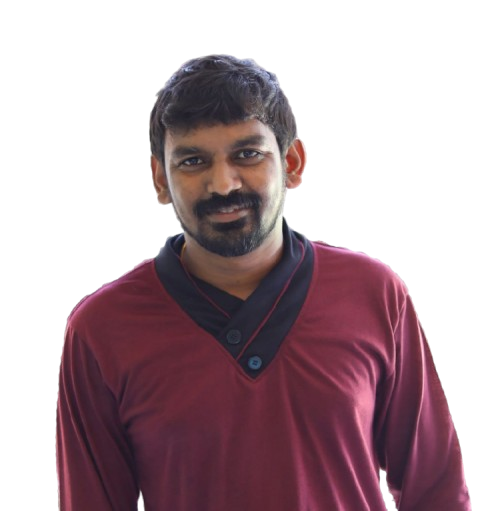

🤖 AI Systems
AI Agent Systems
Voice AI
Coding AI
Model Orchestration
Workflow Tools
☁️ GCP & Leadership
GCP Landing Zone
ESDS → GCP Migration
Cost Optimization
IAM & Governance
Technical Leadership
AI Governance
🏆 Case Study
Migration Case Study

Naresh Kadali
GCP Architect | AI Systems | Technical Lead
📍 Bangalore |
LinkedIn